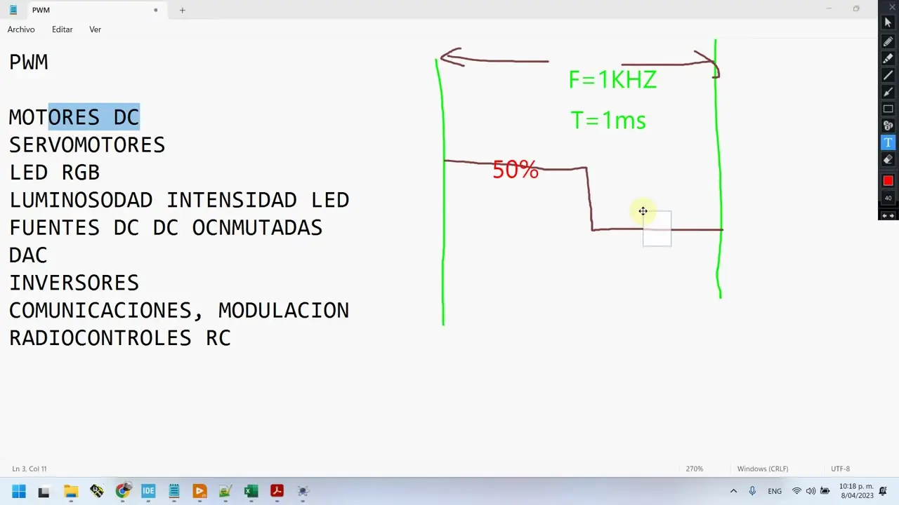

La frecuencia (o el periodo) es fija; por ejemplo, 1 kHz equivale a 1 ms. Lo que cambia es cuánto de ese periodo está en alto: 50 %, 90 %, 20 %... El tiempo en bajo es el resto.
Con eso se controla la potencia media sobre cargas inductivas, la velocidad de motores o la luminosidad de LEDs.
